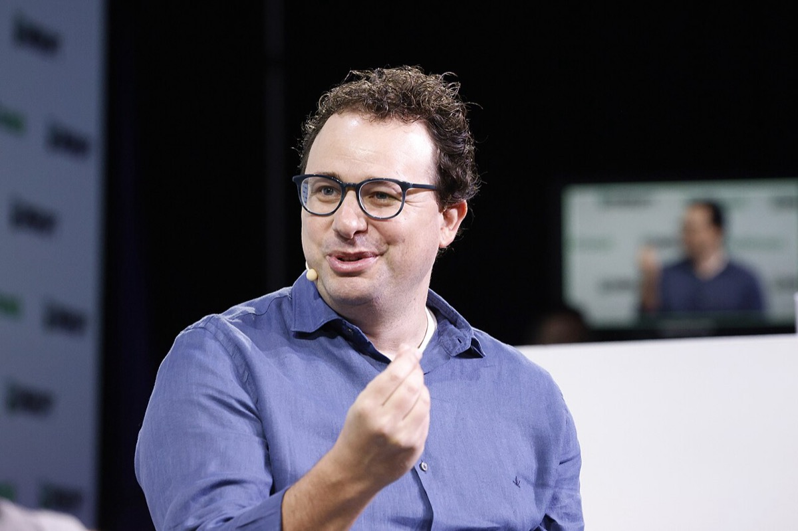
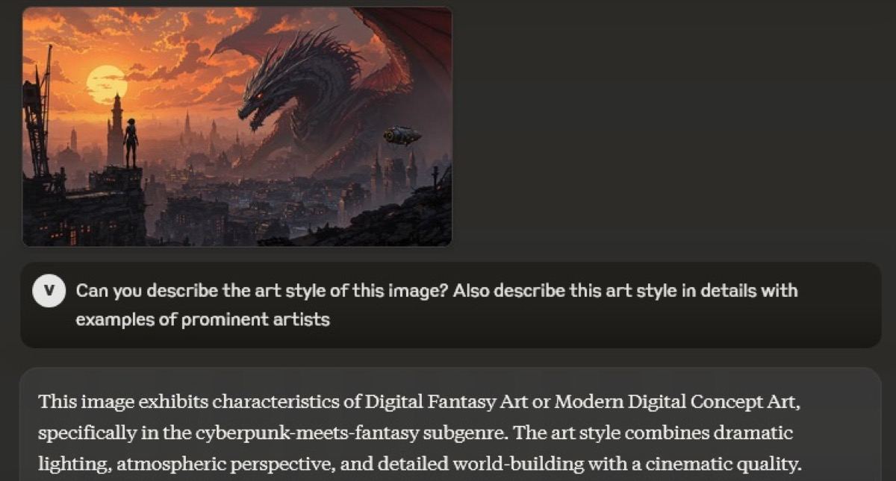
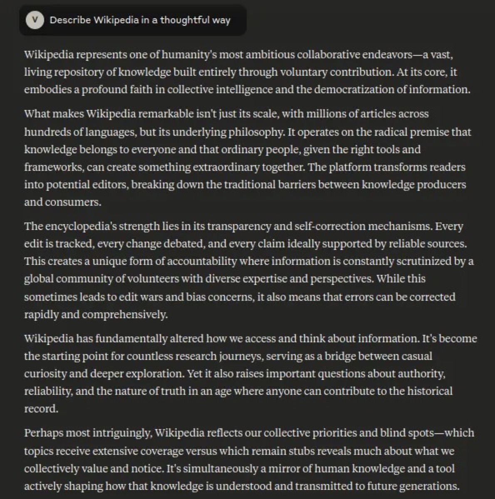
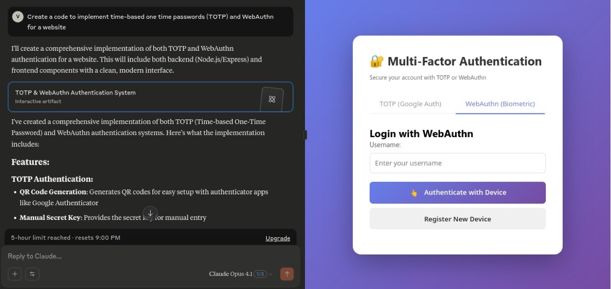
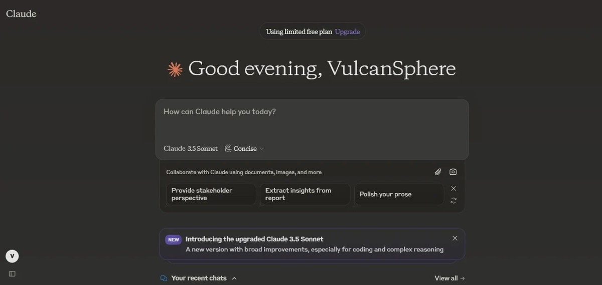
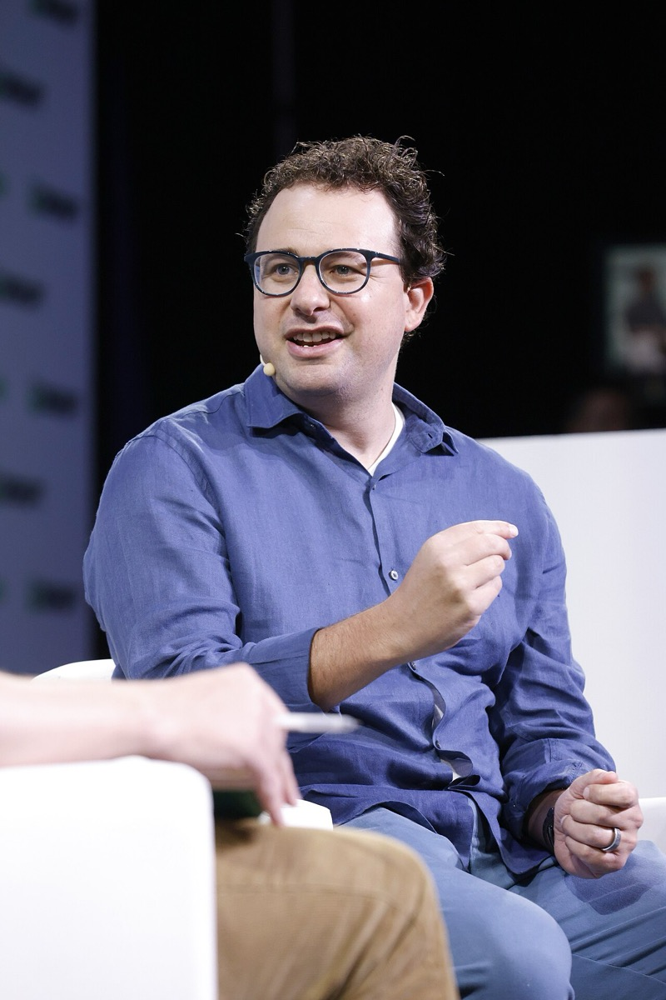
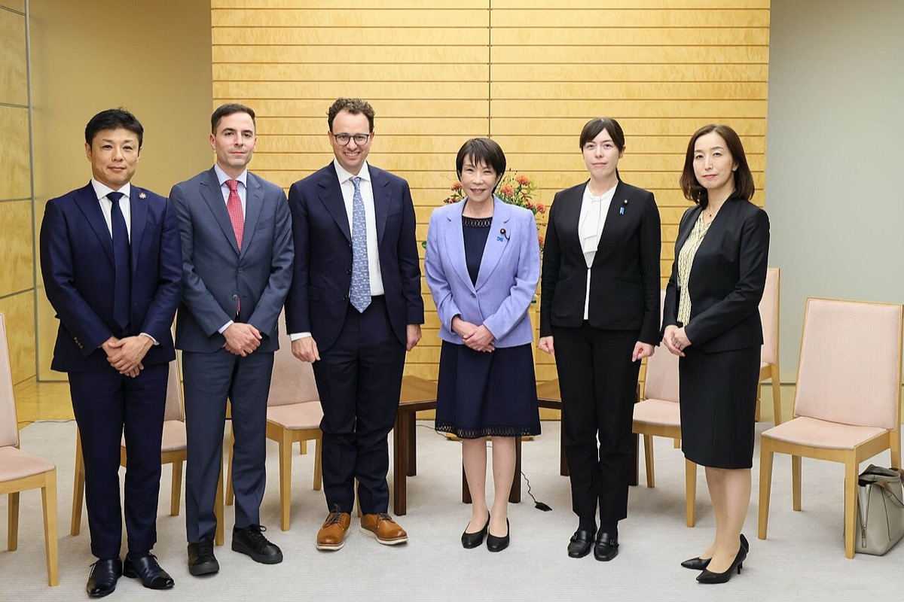

判断は二つである。第一に、アモデイが自ら起草したRSPの運用日と旗艦単価引き下げが同じ暦四半期に並ぶか。第二に、本人が説明したASLのif-thenに対し、CEO任期内で閾値未確定のままASL-3配備が実行されたか。
改稿日 2026年11月11日（初稿 2026年9月26日）。本ページは主張2件の検証に限定する。経歴の列挙・失敗類型・語録は主張の検証に不要なため置かない。本文生成に Anthropic 製モデルを用いている。公式発信は一次資料として用いるが評価としては引用しない。
読者と判断：アモデイ本人のRSP運用を、旗艦単価引き下げの同時シグナルと読むか。本人が説明したASLのif-thenを、閾値未確定でもASL-3配備が実行される制度として読むか。いずれも本人の権限・説明・任期内の結果で判定できる。
分解：物理的制約は演算と電力である。お金の流れのうち本人持分は非開示である。法と強制力はRSPが自主コミットメントである点に現れる。利得の帰属は、本人が起草した制度の運用結果と本人が説明したASLの帰結に現れる。時間は「同じ暦四半期に並ぶか」と「本人のASL説明から任期内の配備まで」である。
先に結論を置く。
1. 本人のRSP／ASL運用と旗艦単価の非同時性。アモデイはRSP草稿を自ら書きASLを提案したと記す。2024-03〜2025-09に旗艦Sonnetは$3/$15（約450円/約2,300円）、Opusは$15/$75（約2,300円/約1.1万円）で固定である。本人が起草した制度の運用日は、RSP版更新が2024-10-15・2025-03-31・2025-05-14、ASL-3発動が2025-05-22である。旗艦単価の引き下げはこれらの四半期に無い。ここまでが主張1の範囲である50404251。
2. 本人のASL説明と任期内の予防的配備。アモデイは2023-11-01にASLをif-thenと説明した。本人CEO任期内の初のASL-3発動はOpus 4（2025-05-22）である。公式は閾値未確定と書き、予防的・暫定的なASL-3の下で同日配備した。公開記録上、本人説明の閾値到達が確定しないままASL-3配備が実行された。社内の閾値成否は判定不能である505130。





権限と選択の根拠は本人発言である。2023-11-01、アモデイはUK AI Safety Summit向け原稿で「CEOとして3か月間、時間の10〜20%をRSPに使い、草稿を自ら書き、ASLを考案・提案した」と記した。検証の左辺は、本人が起草した制度の運用日（RSP版更新日／ASL-3発動日）である。右辺の旗艦API単価はAnthropic公式のモデル発表文に載る公開系列であり、比較の基準点として用いる50。
Claude 3発表（2024-03-04）でSonnetは$3/$15（100万トークンあたり約450円/約2,300円）、Opusは$15/$75（約2,300円/約1.1万円）と公式に書かれた。以後Claude 3.5 Sonnet（2024-06）、Claude 3.7 Sonnet（2025-02）、Claude 4（2025-05-22）も同帯の据え置きを書く。Claude 4はOpus 4を$15/$75（2025年のレートで約2,200円/約1.1万円）、Sonnet 4を$3/$15（約450円/約2,200円）と明記する。ASL-3発動日（2025-05-22）も同じ四半期・同じ単価である4041453051。
| 日付 | 本人の制度運用／配備 | Sonnet | Opus | 日本円（Sonnet ／ Opus。年平均レート） | 暦四半期 |
|---|---|---|---|---|---|
| 2024-03-04 | Claude 3公開 | $3 / $15 | $15 / $75 | 約450円/約2,300円 ／ 約2,300円/約1.1万円 | 2024-Q140 |
| 2024-06-20 | Claude 3.5 Sonnet | $3 / $15 | $15 / $75 | 約450円/約2,300円 ／ 約2,300円/約1.1万円 | 2024-Q241 |
| 2024-10-15 | RSP v2.0発効 | $3 / $15 | $15 / $75 | 約450円/約2,300円 ／ 約2,300円/約1.1万円 | 2024-Q442 |
| 2025-03-31 | RSP v2.1発効 | $3 / $15 | $15 / $75 | 約450円/約2,200円 ／ 約2,200円/約1.1万円 | 2025-Q142 |
| 2025-05-14 | RSP v2.2発効 | $3 / $15 | $15 / $75 | 約450円/約2,200円 ／ 約2,200円/約1.1万円 | 2025-Q242 |
| 2025-05-22 | ASL-3発動＋Claude 4 | $3 / $15 | $15 / $75 | 約450円/約2,200円 ／ 約2,200円/約1.1万円 | 2025-Q25130 |
| 2025-09-02 | Series F発表（単価据え置き） | $3 / $15 | $15 / $75 | 約450円/約2,200円 ／ 約2,200円/約1.1万円 | 2025-Q331 |
Haiku帯の単価変更は旗艦帯ではない。反証条件の「旗艦単価引き下げ」には入れない。単価表の二次整理は報道経路を含む46。
判定：主張1は支持。支持の内容は「本人が起草したRSP／ASLの運用日と、旗艦単価引き下げが同じ暦四半期に並ばない」ことだけである。安全性方針が単価から因果的に独立である、とは書かない。


本人の説明が比較の起点である。2023-11-01、アモデイはUK AI Safety Summit向け原稿でASLをif-then（危険能力が出たら安全策が整うまで配備・訓練しない）と説明した。問うのは、その説明の後の本人CEO任期内で、公開記録上「閾値到達」が確定しないままASL-3配備が実行されたかである。社内で条件が破られたかは問わない50。
2025-05-22、Anthropicは「Claude Opus 4の配備と同時にASL-3のDeployment／Security Standardsを発動した」と書いた。続けて「Opus 4がASL-3を要するCapability Thresholdを確定的に超えたとはまだ判断していない」と明記し、予防的・暫定的な発動だと述べた。同日のClaude 4発表でOpus 4は一般配備された。これは本人CEO任期内の結果である5130。
| 項目 | 記録 | 本主張での扱い |
|---|---|---|
| 本人のASL説明 | 2023-11-01、if-thenと明記 | 比較の起点として採用50 |
| Capability Threshold | 2025-05-22、確定的到達は未判定 | 「未確定」として採用51 |
| ASL-3の位置づけ | 予防的・暫定的と明記 | 予防的ASL-3として採用51 |
| 配備日 | 本人CEO任期内、ASL-3発動と同日 | 任期内の結果として採用30 |
| 社内の閾値成否 | 非開示 | 判定不能（範囲外） |
言えないこと。社内評価で閾値到達を確定していたか。if-thenの「危険能力を示した」条件が成立したか。判定に必要なデータは、閾値判定の日付付き一次記録である。条件成否が不明なまま「本人のif-thenが破られた」とは書かない。
判定：主張2は支持。支持の内容は「本人が説明した閾値到達が公開記録上確定しないまま、本人CEO任期内で予防的ASL-3配備が実行された」ことまでである。閾値条件の成否は判定不能であり、範囲外とする。
主張1・2の日付に限る。FTX投下時期の訂正（2021年投下・2022年Series B発表）も含める。日付の右は満年齢（生年1983年仮定）である。
本文の主要な金額を、その年の年平均レートで円に直した。単価は100万トークン（MTok）あたりの値である。
| 本文の金額 | 年 | 当時のレートで円 | 今の物価で円 | 給料で見た重み | 意味 |
|---|---|---|---|---|---|
| Sonnet 入力 $3/MTok | 2024 | 約450円 | 省略 | 省略 | 観察期間の2024-03〜2025-09を通じて、この単価は変わらなかった。 |
| Sonnet 出力 $15/MTok | 2024 | 約2,300円 | 省略 | 省略 | 出力の単価は入力の5倍である。 |
| Opus 入力 $15/MTok | 2024 | 約2,300円 | 省略 | 省略 | 上位の旗艦は Sonnet の5倍の単価に設定された。 |
| Opus 出力 $75/MTok | 2024 | 約1.1万円 | 省略 | 省略 | 100万トークンの出力が、2024年の大卒初任給（月約25万円）の約5%に当たる。 |
| Opus 4 $15/$75 | 2025 | 約2,200円/約1.1万円 | 省略 | 省略 | ASL-3発動と同日の配備でも、単価は据え置かれた。 |
| FTX側の投下 $500M | 2021 | 約550億円 | 省略 | 省略 | 2022年4月に発表した Series B $580M の約86%に当たる。 |
| Series B $580M | 2022 | 約760億円 | 省略 | 省略 | 2025年の Series F $13B の約4.5%である。 |
| Series F $13B | 2025 | 約1.9兆円 | 省略 | 省略 | 評価額 $183B の約7.1%を1回で調達した。 |
| 評価額 $183B | 2025 | 約27兆円 | 省略 | 省略 | 同年3月の Series E の評価額 $61.5B の約3.0倍である（出典10）。 |
換算の方法。ドルは FRED の AEXJPUS（ニューヨーク市場の年平均）で、その年の円にした。2000年以降の金額は今までの物価の上昇が2割以内のため、物価と給料による換算は省略した。同じ $15 でも、2024年は約2,300円で2025年は約2,200円になる。2025年のレート（1ドル=149.6円）で換算し直すと、2021〜2022年の金額は円で約1.1〜1.4倍になる。本ページは当時のレートを用いる。
出典：FRED AEXJPUS https://fred.stlouisfed.org/series/AEXJPUS ／ 厚生労働省 令和7年賃金構造基本統計調査 第10表（2024年と2025年の大卒初任給） https://www.mhlw.go.jp/toukei/itiran/roudou/chingin/kouzou/z2025/dl/10.pdf
公開系列から確認できる利得と、本文データからの推測を分ける。(1) アモデイCEO。本人が起草したRSPの改訂と旗艦配備を止めずに進められる裁量（主張1・2の観測結果）。(2) Series E/Fの成長株投資家の含み益は推測である。(3) 創業者・従業員持分の利得も個人比率がN/Aのため推測である。相手側の帳簿評価益やクラウド還流は本主張の範囲外とする3151。


.jpg){kind=link}